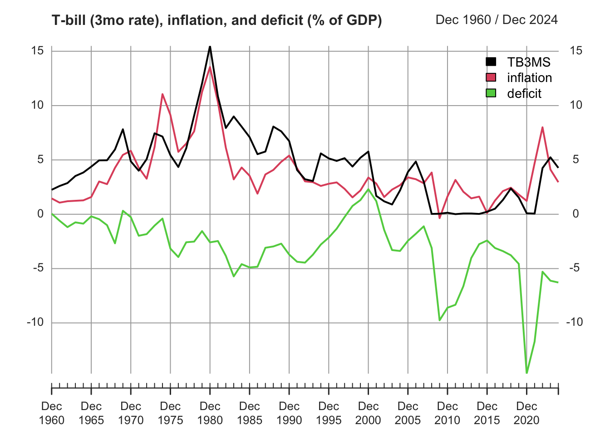

pacman::p_load(wooldridge,
readr,
stargazer,
kableExtra,
quantmod,
xts)5 Regression models
5.1 Data
earns <- read.csv("data/earns.csv")
gpa1 <- read.csv("data/gpa1.csv")
hprice1 <- read.csv("data/hprice1.csv")
hprice2 <- read.csv("data/hprice2.csv")
hprice3 <- read.csv("data/hprice3.csv")
jtrain <- read.csv("data/jtrain.csv")
nyse <- read.csv("data/nyse.csv")
phillips <- read.csv("data/phillips.csv")
rdchem <- read.csv("data/rdchem.csv")
traffic1 <- read.csv("data/traffic1.csv")
wage1 <- read.csv("data/wage1.csv")5.2 Chapter 2: The Simple Regression Model
5.2.1 Example 2.10: A Log Wage Equation
Load the wage1 data and check out the documentation. The documentation indicates these are data from the 1976 Current Population Survey, collected by Henry Farber when he and Wooldridge were colleagues at MIT in 1988.
\(educ\): years of education
\(wage\): average hourly earnings
\(lwage\): log of the average hourly earnings
First, make a scatter-plot of the two variables and look for possible patterns in the relationship between them.
It appears that on average, more years of education, leads to higher wages.
The example in the text is interested in the return to another year of education, or what the percentage change in wages one might expect for each additional year of education. To do so, one must use the \(log(\)wage\()\). This has already been computed in the data set and is defined as lwage.
The textbook provides excellent discussions around these topics, so please consult it.
Build a linear model to estimate the relationship between the log of wage (lwage) and education (educ).
\[\widehat{log(wage)} = \beta_0 + \beta_1educ\]
log_wage_model <- lm(lwage ~ educ, data = wage1)Print the summary of the results.
summary(log_wage_model)| Dependent variable: | |
| lwage | |
| educ | 0.08274*** (0.00757) |
| Constant | 0.58377*** (0.09734) |
| Observations | 526 |
| R2 | 0.18581 |
| Adjusted R2 | 0.18425 |
| Residual Std. Error | 0.48008 (df = 524) |
| F Statistic | 119.58160*** (df = 1; 524) |
| Note: | p<0.1; p<0.05; p<0.01 |
Plot the \(log(\)wage\()\) vs educ. The blue line represents the least squares fit.
5.3 Chapter 3: Multiple Regression Analysis: Estimation
5.3.1 Example 3.2: Hourly Wage Equation
Check the documentation for variable information
\(lwage\): log of the average hourly earnings
\(educ\): years of education
\(exper\): years of potential experience
\(tenutre\): years with current employer
Plot the variables against lwage and compare their distributions and slope (\(\beta\)) of the simple regression lines.
Estimate the model regressing educ, exper, and tenure against log(wage).
\[\widehat{log(wage)} = \beta_0 + \beta_1educ + \beta_3exper + \beta_4tenure\]
hourly_wage_model <- lm(lwage ~ educ + exper + tenure, data = wage1)Print the estimated model coefficients:
coefficients(hourly_wage_model)| Coefficients | |
|---|---|
| (Intercept) | 0.2844 |
| educ | 0.0920 |
| exper | 0.0041 |
| tenure | 0.0221 |
Plot the coefficients, representing percentage impact of each variable on \(log(\)wage\()\) for a quick comparison.
5.4 Chapter 4: Multiple Regression Analysis: Inference
5.4.1 Example 4.1 Hourly Wage Equation
Using the same model estimated in example: 3.2, examine and compare the standard errors associated with each coefficient. Like the textbook, these are contained in parenthesis next to each associated coefficient.
summary(hourly_wage_model)| Dependent variable: | |
| lwage | |
| educ | 0.09203*** (0.00733) |
| exper | 0.00412** (0.00172) |
| tenure | 0.02207*** (0.00309) |
| Constant | 0.28436*** (0.10419) |
| Observations | 526 |
| R2 | 0.31601 |
| Adjusted R2 | 0.31208 |
| Residual Std. Error | 0.44086 (df = 522) |
| F Statistic | 80.39092*** (df = 3; 522) |
| Note: | p<0.1; p<0.05; p<0.01 |
For the years of experience variable, or exper, use coefficient and Standard Error to compute the \(t\) statistic:
\[t_{exper} = \frac{0.004121}{0.001723} = 2.391\]
Fortunately, R includes \(t\) statistics in the summary of model diagnostics.
summary(hourly_wage_model)$coefficients| Estimate | Std. Error | t value | Pr(>|t|) | |
|---|---|---|---|---|
| (Intercept) | 0.28436 | 0.10419 | 2.72923 | 0.00656 |
| educ | 0.09203 | 0.00733 | 12.55525 | 0.00000 |
| exper | 0.00412 | 0.00172 | 2.39144 | 0.01714 |
| tenure | 0.02207 | 0.00309 | 7.13307 | 0.00000 |
Plot the \(t\) statistics for a visual comparison:
5.4.2 Example 4.7 Effect of Job Training on Firm Scrap Rates
Load the jtrain data set.
From H. Holzer, R. Block, M. Cheatham, and J. Knott (1993), Are Training Subsidies Effective? The Michigan Experience, Industrial and Labor Relations Review 46, 625-636. The authors kindly provided the data.
\(year:\) 1987, 1988, or 1989
\(union:\) =1 if unionized
\(lscrap:\) Log(scrap rate per 100 items)
\(hrsemp:\) (total hours training) / (total employees trained)
\(lsales:\) Log(annual sales, $)
\(lemploy:\) Log(umber of employees at plant)
First, use the subset function and it’s argument by the same name to return observations which occurred in 1987 and are not union. At the same time, use the select argument to return only the variables of interest for this problem.
jtrain_subset <- subset(jtrain, subset = (year == 1987 & union == 0),
select = c(year, union, lscrap, hrsemp, lsales, lemploy))Next, test for missing values. One can “eyeball” these with R Studio’s View function, but a more precise approach combines the sum and is.na functions to return the total number of observations equal to NA.
sum(is.na(jtrain_subset))[1] 156While R’s lm function will automatically remove missing NA values, eliminating these manually will produce more clearly proportioned graphs for exploratory analysis. Call the na.omit function to remove all missing values and assign the new data.frame object the name jtrain_clean.
jtrain_clean <- na.omit(jtrain_subset)Use jtrain_clean to plot the variables of interest against lscrap. Visually observe the respective distributions for each variable, and compare the slope (\(\beta\)) of the simple regression lines.
Now create the linear model regressing hrsemp(total hours training/total employees trained), lsales(log of annual sales), and lemploy(the log of the number of the employees), against lscrap(the log of the scrape rate).
\[lscrap = \alpha + \beta_1 hrsemp + \beta_2 lsales + \beta_3 lemploy\]
linear_model <- lm(lscrap ~ hrsemp + lsales + lemploy, data = jtrain_clean)Finally, print the complete summary diagnostics of the model.
summary(linear_model)| Dependent variable: | |
| lscrap | |
| hrsemp | -0.02927 (0.02280) |
| lsales | -0.96203** (0.45252) |
| lemploy | 0.76147* (0.40743) |
| Constant | 12.45837** (5.68677) |
| Observations | 29 |
| R2 | 0.26243 |
| Adjusted R2 | 0.17392 |
| Residual Std. Error | 1.37604 (df = 25) |
| F Statistic | 2.96504* (df = 3; 25) |
| Note: | p<0.1; p<0.05; p<0.01 |
5.5 Chapter 5: Multiple Regression Analysis: OLS Asymptotics
5.5.1 Example 5.1: Housing Prices and Distance From an Incinerator
Load the hprice3 data set.
\(lprice:\) Log(selling price)
\(ldist:\) Log(distance from house to incinerator, feet)
\(larea:\) Log(square footage of house)
Graph the prices of housing against distance from an incinerator:
Next, model the \(log(\)price\()\) against the \(log(\)dist\()\) to estimate the percentage relationship between the two.
\[price = \alpha + \beta_1 dist\]
price_dist_model <- lm(lprice ~ ldist, data = hprice3)Create another model that controls for “quality” variables, such as square footage area per house.
\[price = \alpha + \beta_1 dist + \beta_2 area\]
price_area_model <- lm(lprice ~ ldist + larea, data = hprice3)Compare the coefficients of both models. Notice that adding area improves the quality of the model, but also reduces the coefficient size of dist.
summary(price_dist_model)
summary(price_area_model)| Dependent variable: | ||
| lprice | ||
| (1) | (2) | |
| ldist | 0.31722*** (0.04811) | 0.19623*** (0.03816) |
| larea | 0.78368*** (0.05358) | |
| Constant | 8.25750*** (0.47383) | 3.49394*** (0.49065) |
| Observations | 321 | 321 |
| R2 | 0.11994 | 0.47385 |
| Adjusted R2 | 0.11718 | 0.47054 |
| Residual Std. Error | 0.41170 (df = 319) | 0.31883 (df = 318) |
| F Statistic | 43.47673*** (df = 1; 319) | 143.19470*** (df = 2; 318) |
| Note: | p<0.1; p<0.05; p<0.01 | |
Graphing illustrates the larger coefficient for area.
5.6 Chapter 6: Multiple Regression: Further Issues
5.6.1 Example 6.1: Effects of Pollution on Housing Prices, standardized.
Load the hprice2 data and view the documentation.
Data from Hedonic Housing Prices and the Demand for Clean Air, by Harrison, D. and D.L.Rubinfeld, Journal of Environmental Economics and Management 5, 81-102. Diego Garcia, a former Ph.D. student in economics at MIT, kindly provided these data, which he obtained from the book Regression Diagnostics: Identifying Influential Data and Sources of Collinearity, by D.A. Belsey, E. Kuh, and R. Welsch, 1990. New York: Wiley.
\(price\): median housing price.
\(nox\): Nitrous Oxide concentration; parts per million.
\(crime\): number of reported crimes per capita.
\(rooms\): average number of rooms in houses in the community.
\(dist\): weighted distance of the community to 5 employment centers.
\(stratio\): average student-teacher ratio of schools in the community.
\[price = \beta_0 + \beta_1nox + \beta_2crime + \beta_3rooms + \beta_4dist + \beta_5stratio + \mu\]
Estimate the usual lm model.
housing_level <- lm(price ~ nox + crime + rooms + dist + stratio, data = hprice2)Estimate the same model, but standardized coefficients by wrapping each variable with R’s scale function:
\[\widehat{zprice} = \beta_1znox + \beta_2zcrime + \beta_3zrooms + \beta_4zdist + \beta_5zstratio\]
housing_standardized <- lm(scale(price) ~ 0 + scale(nox) + scale(crime) + scale(rooms) + scale(dist) + scale(stratio), data = hprice2)Compare results, and observe
summary(housing_level)
summary(housing_standardized)| Dependent variable: | ||
| price | scale(price) | |
| (1) | (2) | |
| nox | -2,706.43300*** (354.08690) | |
| crime | -153.60100*** (32.92883) | |
| rooms | 6,735.49800*** (393.60370) | |
| dist | -1,026.80600*** (188.10790) | |
| stratio | -1,149.20400*** (127.42870) | |
| scale(nox) | -0.34045*** (0.04450) | |
| scale(crime) | -0.14328*** (0.03069) | |
| scale(rooms) | 0.51389*** (0.03000) | |
| scale(dist) | -0.23484*** (0.04298) | |
| scale(stratio) | -0.27028*** (0.02994) | |
| Constant | 20,871.13000*** (5,054.59900) | |
| Observations | 506 | 506 |
| R2 | 0.63567 | 0.63567 |
| Adjusted R2 | 0.63202 | 0.63203 |
| Residual Std. Error | 5,586.19800 (df = 500) | 0.60601 (df = 501) |
| F Statistic | 174.47330*** (df = 5; 500) | 174.82220*** (df = 5; 501) |
| Note: | p<0.1; p<0.05; p<0.01 | |
5.6.2 Example 6.2: Effects of Pollution on Housing Prices, Quadratic Interactive Term
Modify the housing model from example 4.5, adding a quadratic term in rooms:
\[log(price) = \beta_0 + \beta_1log(nox) + \beta_2log(dist) + \beta_3rooms + \beta_4rooms^2 + \beta_5stratio + \mu\]
housing_model_4.5 <- lm(lprice ~ lnox + log(dist) + rooms + stratio, data = hprice2)
housing_model_6.2 <- lm(lprice ~ lnox + log(dist) + rooms + I(rooms^2) + stratio,
data = hprice2)Compare the results with the model from example 6.1.
summary(housing_model_4.5)
summary(housing_model_6.2)| Dependent variable: | ||
| lprice | ||
| (1) | (2) | |
| lnox | -0.95354*** (0.11674) | -0.90168*** (0.11469) |
| log(dist) | -0.13434*** (0.04310) | -0.08678** (0.04328) |
| rooms | 0.25453*** (0.01853) | -0.54511*** (0.16545) |
| I(rooms2) | 0.06226*** (0.01280) | |
| stratio | -0.05245*** (0.00590) | -0.04759*** (0.00585) |
| Constant | 11.08386*** (0.31811) | 13.38548*** (0.56647) |
| Observations | 506 | 506 |
| R2 | 0.58403 | 0.60281 |
| Adjusted R2 | 0.58071 | 0.59884 |
| Residual Std. Error | 0.26500 (df = 501) | 0.25921 (df = 500) |
| F Statistic | 175.85520*** (df = 4; 501) | 151.77040*** (df = 5; 500) |
| Note: | p<0.1; p<0.05; p<0.01 | |
Estimate the minimum turning point at which the rooms interactive term changes from negative to positive.
\[x = \frac{\hat{\beta_1}}{2\hat{\beta_2}}\]
beta_1 <- summary(housing_model_6.2)$coefficients["rooms",1]
beta_2 <- summary(housing_model_6.2)$coefficients["I(rooms^2)",1]
turning_point <- abs(beta_1 / (2*beta_2))
print(turning_point)[1] 4.37763Compute the percent change across a range of average rooms. Include the smallest, turning point, and largest.
Rooms <- c(min(hprice2$rooms), 4, turning_point, 5, 5.5, 6.45, 7.5, max(hprice2$rooms))
Percent.Change <- 100*(beta_1 + 2*beta_2*Rooms)
kable(data.frame(Rooms, Percent.Change))| Rooms | Percent.Change |
|---|---|
| 3.56000 | -10.181324 |
| 4.00000 | -4.702338 |
| 4.37763 | 0.000000 |
| 5.00000 | 7.749903 |
| 5.50000 | 13.976023 |
| 6.45000 | 25.805651 |
| 7.50000 | 38.880503 |
| 8.78000 | 54.819367 |
Graph the log of the selling price against the number of rooms. Superimpose a simple model as well as a quadratic model and examine the difference.
5.7 Chapter 7: Multiple Regression Analysis with Qualitative Information
5.7.1 Example 7.4: Housing Price Regression, Qualitative Binary variable
This time, use the hrprice1 data.
Data collected from the real estate pages of the Boston Globe during 1990. These are homes that sold in the Boston, MA area.
\(lprice:\) Log(house price, $1000s)
\(llotsize:\) Log(size of lot in square feet)
\(lsqrft:\) Log(size of house in square feet)
\(bdrms:\) number of bdrms
\(colonial:\) =1 if home is colonial style
\[\widehat{log(price)} = \beta_0 + \beta_1log(lotsize) + \beta_2log(sqrft) + \beta_3bdrms + \beta_4colonial \]
Estimate the coefficients of the above linear model on the hprice data set.
housing_qualitative <- lm(lprice ~ llotsize + lsqrft + bdrms + colonial, data = hprice1)summary(housing_qualitative)| Dependent variable: | |
| lprice | |
| llotsize | 0.16782*** (0.03818) |
| lsqrft | 0.70719*** (0.09280) |
| bdrms | 0.02683 (0.02872) |
| colonial | 0.05380 (0.04477) |
| Constant | -1.34959** (0.65104) |
| Observations | 88 |
| R2 | 0.64907 |
| Adjusted R2 | 0.63216 |
| Residual Std. Error | 0.18412 (df = 83) |
| F Statistic | 38.37846*** (df = 4; 83) |
| Note: | p<0.1; p<0.05; p<0.01 |
5.8 Chapter 8: Heteroskedasticity
5.8.1 Example 8.9: Determinants of Personal Computer Ownership
\[\widehat{PC} = \beta_0 + \beta_1hsGPA + \beta_2ACT + \beta_3parcoll + \beta_4colonial \] Christopher Lemmon, a former MSU undergraduate, collected these data from a survey he took of MSU students in Fall 1994. Load gpa1 and create a new variable combining the fathcoll and mothcoll, into parcoll. This new column indicates if either parent went to college.
gpa1$parcoll <- as.integer(gpa1$fathcoll==1 | gpa1$mothcoll)
GPA_OLS <- lm(PC ~ hsGPA + ACT + parcoll, data = gpa1)Calculate the weights and then pass them to the weights argument.
weights <- GPA_OLS$fitted.values * (1-GPA_OLS$fitted.values)
GPA_WLS <- lm(PC ~ hsGPA + ACT + parcoll, data = gpa1, weights = 1/weights)Compare the OLS and WLS model in the table below:
| Dependent variable: | ||
| PC | ||
| (1) | (2) | |
| hsGPA | 0.06539 (0.13726) | 0.03270 (0.12988) |
| ACT | 0.00056 (0.01550) | 0.00427 (0.01545) |
| parcoll | 0.22105** (0.09296) | 0.21519** (0.08629) |
| Constant | -0.00043 (0.49054) | 0.02621 (0.47665) |
| Observations | 141 | 141 |
| R2 | 0.04153 | 0.04644 |
| Adjusted R2 | 0.02054 | 0.02556 |
| Residual Std. Error (df = 137) | 0.48599 | 1.01624 |
| F Statistic (df = 3; 137) | 1.97851 | 2.22404* |
| Note: | p<0.1; p<0.05; p<0.01 | |
5.9 Chapter 9: More on Specification and Data Issues
5.9.1 Example 9.8: R&D Intensity and Firm Size
\[rdintens = \beta_0 + \beta_1sales + \beta_2profmarg + \mu\]
From Businessweek R&D Scoreboard, October 25, 1991. Load the data and estimate the model.
all_rdchem <- lm(rdintens ~ sales + profmarg, data = rdchem)Plotting the data reveals the outlier on the far right of the plot, which will skew the results of our model.
So, we can estimate the model without that data point to gain a better understanding of how sales and profmarg describe rdintens for most firms. We can use the subset argument of the linear model function to indicate that we only want to estimate the model using data that is less than the highest sales.
smallest_rdchem <- lm(rdintens ~ sales + profmarg, data = rdchem,
subset = (sales < max(sales)))The table below compares the results of both models side by side. By removing the outlier firm, \(sales\) become a more significant determination of R&D expenditures.
| Dependent variable: | ||
| rdintens | ||
| (1) | (2) | |
| sales | 0.00005 (0.00004) | 0.00019** (0.00008) |
| profmarg | 0.04462 (0.04618) | 0.04784 (0.04448) |
| Constant | 2.62526*** (0.58553) | 2.29685*** (0.59180) |
| Observations | 32 | 31 |
| R2 | 0.07612 | 0.17281 |
| Adjusted R2 | 0.01240 | 0.11372 |
| Residual Std. Error | 1.86205 (df = 29) | 1.79218 (df = 28) |
| F Statistic | 1.19465 (df = 2; 29) | 2.92476* (df = 2; 28) |
| Note: | p<0.1; p<0.05; p<0.01 | |
5.10 Chapter 10: Basic Regression Analysis with Time Series Data
5.10.1 Example 10.2: Effects of Inflation and Deficits on Interest Rates
\[\widehat{i3} = \beta_0 + \beta_1inf_t + \beta_2def_t\] Data from the Economic Report of the President, 2004, Tables B-64, B-73, and B-79.
#data("intdef") # load data
# load eXtensible Time Series package.
# xts is excellent for time series plots and
# properly indexing time series.
#library(xts)
# create xts object from data.frame
# First, index year as yearmon class of monthly data.
# Note: I add 11/12 to set the month to December, end of year.
index <- zoo::as.yearmon(intdef$year + 11/12)
# Next, create the xts object, ordering by the index above.
intdef.xts <- xts(intdef[ ,-1], order.by = index)
# extract 3-month Tbill, inflation, and deficit data
intdef.xts <- intdef.xts[ ,c("i3", "inf", "def")]
# rename with clearer names
colnames(intdef.xts) <- c("Tbill3mo", "cpi", "deficit")
# plot the object, add a title, and place legend at top left.
plot(x = intdef.xts,
main = "Inflation, Deficits, and Interest Rates",
legend.loc = "topleft")# Run a Linear regression model
tbill_model <- lm(Tbill3mo ~ cpi + deficit, data = intdef.xts)| Dependent variable: | |
| Tbill3mo | |
| cpi | 0.60587*** (0.08213) |
| deficit | 0.51306*** (0.11838) |
| Constant | 1.73327*** (0.43197) |
| Observations | 56 |
| R2 | 0.60207 |
| Adjusted R2 | 0.58705 |
| Residual Std. Error | 1.84316 (df = 53) |
| F Statistic | 40.09424*** (df = 2; 53) |
| Note: | p<0.1; p<0.05; p<0.01 |
Now lets update the example with current data, pull from the Federal Reserve Economic Research (FRED) using the quantmod package. Other than the convenient API, the package also formats time series data into xts: eXtensible Time Series objects, which add many feature and benefits when working with time series.
#library(quantmod)
# Tbill, 3 month
getSymbols("TB3MS", src = "FRED")[1] "TB3MS"# convert to annual observations and convert index to type `yearmon`.
TB3MS <- to.yearly(TB3MS, OHLC=FALSE, drop.time = TRUE)
index(TB3MS) <- zoo::as.yearmon(index(TB3MS))
# Inflation
getSymbols("FPCPITOTLZGUSA", src = "FRED")[1] "FPCPITOTLZGUSA"# Convert the index to yearmon and shift FRED's Jan 1st to Dec
index(FPCPITOTLZGUSA) <- zoo::as.yearmon(index(FPCPITOTLZGUSA)) + 11/12
# Rename and update column names
inflation <- FPCPITOTLZGUSA
colnames(inflation) <- "inflation"
## Deficit, percent of GDP: Federal outlays - federal receipts
# Download outlays
getSymbols("FYFRGDA188S", src = "FRED")[1] "FYFRGDA188S" # Lets move the index from Jan 1st to Dec 30th/31st
index(FYFRGDA188S) <- zoo::as.yearmon(index(FYFRGDA188S)) + 11/12
# Rename and update column names
outlays <- FYFRGDA188S
colnames(outlays) <- "outlays"
# Download receipts
getSymbols("FYONGDA188S", src = "FRED")[1] "FYONGDA188S" # Lets move the index from Jan 1st to Dec 30th/31st
index(FYONGDA188S) <- zoo::as.yearmon(index(FYONGDA188S)) + 11/12
# Rename and update column names
receipts <- FYONGDA188S
colnames(receipts) <- "receipts"Now that all data has been downloaded, we can calculate the deficit from the federal outlays and receipts data. Next, we will merge our new deficit variable with inflation and TB3MS variables. As these are all xts times series objects, the merge function will automatically key off each series time date index, insuring integrity and alignment among each observation and its respective date. Additionally, xts provides easy chart construction with its plot method.
# create deficits from outlays - receipts
# xts objects respect their indexing and outline the future
deficit <- outlays - receipts
colnames(deficit) <- "deficit"
# Merge and remove leading and trailing NAs for a balanced data matrix
intdef_updated <- merge(TB3MS, inflation, deficit)
intdef_updated <- zoo::na.trim(intdef_updated)
#Plot all
plot(intdef_updated,
main = "T-bill (3mo rate), inflation, and deficit (% of GDP)",
legend.loc = "topright",)
Now lets run the model again. Inflation plays a much more prominent role in the 3 month T-bill rate, than the deficit.
updated_model <- lm(TB3MS ~ inflation + deficit, data = intdef_updated)| Dependent variable: | |
| TB3MS | |
| inflation | 0.83515*** (0.09277) |
| deficit | 0.28243*** (0.08660) |
| Constant | 2.07613*** (0.52079) |
| Observations | 63 |
| R2 | 0.62114 |
| Adjusted R2 | 0.60851 |
| Residual Std. Error | 2.02432 (df = 60) |
| F Statistic | 49.18552*** (df = 2; 60) |
| Note: | p<0.1; p<0.05; p<0.01 |
5.11 Chapter 11: Further Issues in Using OLS with with Time Series Data
5.11.1 Example 11.7: Wages and Productivity
\[\widehat{log(hrwage_t)} = \beta_0 + \beta_1log(outphr_t) + \beta_2t + \mu_t\] Data from the Economic Report of the President, 1989, Table B-47. The data are for the non-farm business sector.
wage_time <- lm(lhrwage ~ loutphr + t, data = earns)wage_diff <- lm(diff(lhrwage) ~ diff(loutphr), data = earns)| Dependent variable: | ||
| lhrwage | diff(lhrwage) | |
| (1) | (2) | |
| loutphr | 1.63964*** (0.09335) | |
| t | -0.01823*** (0.00175) | |
| diff(loutphr) | 0.80932*** (0.17345) | |
| Constant | -5.32845*** (0.37445) | -0.00366 (0.00422) |
| Observations | 41 | 40 |
| R2 | 0.97122 | 0.36424 |
| Adjusted R2 | 0.96971 | 0.34750 |
| Residual Std. Error (df = 38) | 0.02854 | 0.01695 |
| F Statistic | 641.22430*** (df = 2; 38) | 21.77054*** (df = 1; 38) |
| Note: | p<0.1; p<0.05; p<0.01 | |
5.12 Chapter 12: Serial Correlation and Heteroskedasticiy in Time Series Regressions
5.12.1 Example 12.8: Heteroskedasticity and the Efficient Markets Hypothesis
These are Wednesday closing prices of value-weighted NYSE average, available in many publications. Wooldridge does not recall the particular source used when he collected these data at MIT, but notes probably the easiest way to get similar data is to go to the NYSE web site, www.nyse.com.
\[return_t = \beta_0 + \beta_1return_{t-1} + \mu_t\]
return_AR1 <-lm(return ~ return_1, data = nyse)\[\hat{\mu^2_t} = \beta_0 + \beta_1return_{t-1} + residual_t\]
return_mu <- residuals(return_AR1)
mu2_hat_model <- lm(return_mu^2 ~ return_1, data = return_AR1$model)| Dependent variable: | ||
| return | return_mu2 | |
| (1) | (2) | |
| return_1 | 0.05890 (0.03802) | -1.10413*** (0.20140) |
| Constant | 0.17963** (0.08074) | 4.65650*** (0.42768) |
| Observations | 689 | 689 |
| R2 | 0.00348 | 0.04191 |
| Adjusted R2 | 0.00203 | 0.04052 |
| Residual Std. Error (df = 687) | 2.11040 | 11.17847 |
| F Statistic (df = 1; 687) | 2.39946 | 30.05460*** |
| Note: | p<0.1; p<0.05; p<0.01 | |
5.12.2 Example 12.9: ARCH in Stock Returns
\[\hat{\mu^2_t} = \beta_0 + \hat{\mu^2_{t-1}} + residual_t\]
We still have return_mu in the working environment so we can use it to create \(\hat{\mu^2_t}\), (mu2_hat) and \(\hat{\mu^2_{t-1}}\) (mu2_hat_1). Notice the use R’s matrix subset operations to perform the lag operation. We drop the first observation of mu2_hat and squared the results. Next, we remove the last observation of mu2_hat_1 using the subtraction operator combined with a call to the NROW function on return_mu. Now, both contain \(688\) observations and we can estimate a standard linear model.
mu2_hat <- return_mu[-1]^2
mu2_hat_1 <- return_mu[-NROW(return_mu)]^2
arch_model <- lm(mu2_hat ~ mu2_hat_1)| Dependent variable: | |
| mu2_hat | |
| mu2_hat_1 | 0.33706*** (0.03595) |
| Constant | 2.94743*** (0.44023) |
| Observations | 688 |
| R2 | 0.11361 |
| Adjusted R2 | 0.11231 |
| Residual Std. Error | 10.75907 (df = 686) |
| F Statistic | 87.92263*** (df = 1; 686) |
| Note: | p<0.1; p<0.05; p<0.01 |
5.13 Chapter 13: Pooling Cross Sections across Time: Simple Panel Data Methods
5.13.1 Example 13.7: Effect of Drunk Driving Laws on Traffic Fatalities
Wooldridge collected these data from two sources, the 1992 Statistical Abstract of the United States (Tables 1009, 1012) and A Digest of State Alcohol-Highway Safety Related Legislation, 1985 and 1990, published by the U.S. National Highway Traffic Safety Administration. \[\widehat{\Delta{dthrte}} = \beta_0 + \Delta{open} + \Delta{admin}\]
DD_model <- lm(cdthrte ~ copen + cadmn, data = traffic1)| Dependent variable: | |
| cdthrte | |
| copen | -0.41968** (0.20559) |
| cadmn | -0.15060 (0.11682) |
| Constant | -0.49679*** (0.05243) |
| Observations | 51 |
| R2 | 0.11867 |
| Adjusted R2 | 0.08194 |
| Residual Std. Error | 0.34350 (df = 48) |
| F Statistic | 3.23144** (df = 2; 48) |
| Note: | p<0.1; p<0.05; p<0.01 |
5.14 Chapter 18: Advanced Time Series Topics
5.14.1 Example 18.8: FORECASTING THE U.S. UNEMPLOYMENT RATE
Data from Economic Report of the President, 2004, Tables B-42 and B-64.
\[\widehat{unemp_t} = \beta_0 + \beta_1unem_{t-1}\]
Estimate the linear model in the usual way and note the use of the subset argument to define data equal to and before the year 1996.
phillips_train <- subset(phillips, year <= 1996)
unem_AR1 <- lm(unem ~ unem_1, data = phillips_train)\[\widehat{unemp_t} = \beta_0 + \beta_1unem_{t-1} + \beta_2inf_{t-1}\]
unem_inf_VAR1 <- lm(unem ~ unem_1 + inf_1, data = phillips_train)| Dependent variable: | ||
| unem | ||
| (1) | (2) | |
| unem_1 | 0.73235*** (0.09689) | 0.64703*** (0.08381) |
| inf_1 | 0.18358*** (0.04118) | |
| Constant | 1.57174*** (0.57712) | 1.30380** (0.48969) |
| Observations | 48 | 48 |
| R2 | 0.55397 | 0.69059 |
| Adjusted R2 | 0.54427 | 0.67684 |
| Residual Std. Error | 1.04857 (df = 46) | 0.88298 (df = 45) |
| F Statistic | 57.13184*** (df = 1; 46) | 50.21941*** (df = 2; 45) |
| Note: | p<0.1; p<0.05; p<0.01 | |
Now, use the subset argument to create our testing data set containing observation after 1996. Next, pass the both the model object and the test set to the predict function for both models. Finally, cbind or “column bind” both forecasts as well as the year and unemployment rate of the test set.
phillips_test <- subset(phillips, year >= 1997)
AR1_forecast <- predict.lm(unem_AR1, newdata = phillips_test)
VAR1_forecast <- predict.lm(unem_inf_VAR1, newdata = phillips_test)
kable(cbind(phillips_test[ ,c("year", "unem")], AR1_forecast, VAR1_forecast))| year | unem | AR1_forecast | VAR1_forecast | |
|---|---|---|---|---|
| 50 | 1997 | 4.9 | 5.526452 | 5.348468 |
| 51 | 1998 | 4.5 | 5.160275 | 4.896451 |
| 52 | 1999 | 4.2 | 4.867333 | 4.509137 |
| 53 | 2000 | 4.0 | 4.647627 | 4.425175 |
| 54 | 2001 | 4.8 | 4.501157 | 4.516062 |
| 55 | 2002 | 5.8 | 5.087040 | 4.923537 |
| 56 | 2003 | 6.0 | 5.819394 | 5.350271 |